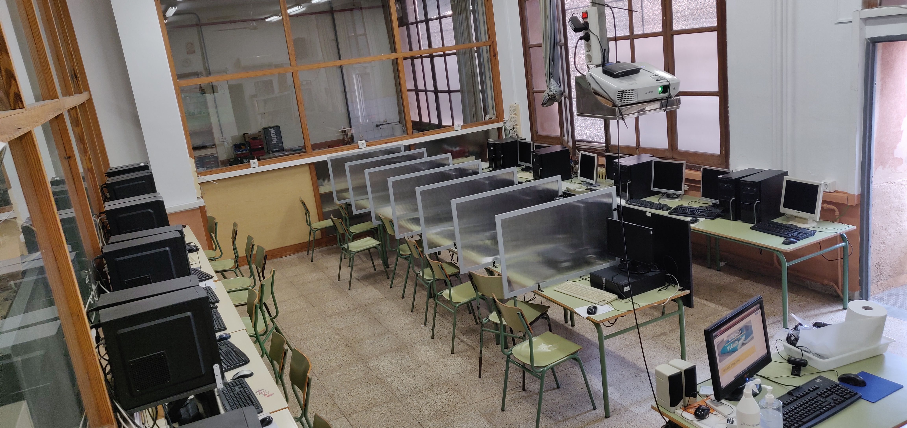

Estan situades al fons esquerra (orientats cap a l'entrada de l'institut) de la planta baixa.
Quina és l'aforament?
L'aforament màxim és de 30 persones.
S'ha de pagar el material?
És totalment gratuït!
Aula d'informàtica
Aula amb noves torres de NOX i netway, una aula de molt bona qualitat. Aquesta aula està preparada per l'estudi del conjunt de totes les eines i programes que tracten, administren, transmeten i comparteixen la informació mitjançant suports tecnològics.

Aula de tecnologia industrial
Aula especialitzada per planificar i dissenyar processos de manufactura i equip que és un aspecte principal de la tecnologia industrial.
Aula de fusta
Aula especialitzada per el treball amb fusta i el seu estudi en la tecnologia.